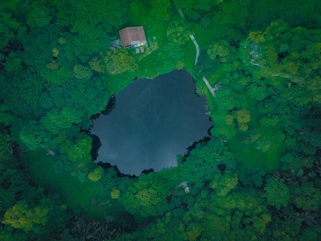
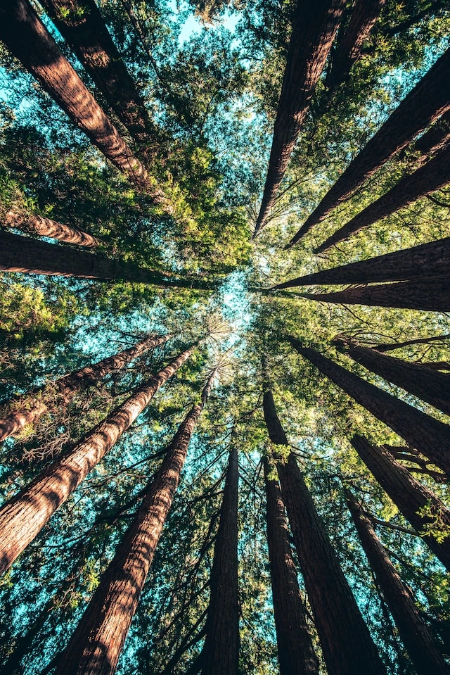
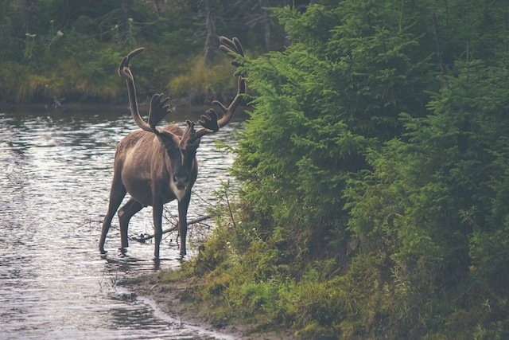

Bienvenue sur GreenSociety
Engagez-vous pour un monde plus vert et plus équitable.
À propos de GreenSociety
Ici, nous sommes dédiés à promouvoir un avenir meilleur pour tous.
texte illustrant la bêtise humaine face à la beauté de la vie animale :
Dans un coin reculé de la forêt, un spectacle extraordinaire se déployait chaque matin. Les rayons du soleil perçaient à travers le feuillage, éclairant un petit étang bordé de fleurs sauvages aux couleurs chatoyantes. Les chants des oiseaux remplissaient l'air de mélodies enchanteresses, tandis que les papillons dansaient gracieusement entre les arbres majestueux.
Les animaux de cette forêt vivaient en harmonie avec la nature qui les entourait. Les cerfs élégants se déplaçaient avec une grâce saisissante, les écureuils jouaient joyeusement dans les branches, et les lapins vifs gambadaient dans l'herbe verte.
Pourtant, au-delà des arbres, les signes de la bêtise humaine étaient visibles. Des déchets abandonnés jonchaient le sol, souillant la pureté de cet écosystème fragile. Les filets de pêche oubliés dans l'étang étaient devenus des pièges mortels pour les poissons et les oiseaux malheureux.
Parfois, des bruits assourdissants déchiraient le calme de la forêt. Des hommes armés de fusils envahissaient ces lieux paisibles pour chasser les animaux innocents, simplement pour le plaisir de tuer. Ils prenaient des trophées pour satisfaire leur ego, ignorant l'impact dévastateur de leurs actions sur l'équilibre de la nature.

De temps en temps, des engins de déforestation s'introduisaient dans cette oasis, détruisant impitoyablement les habitats des animaux, forçant certaines espèces à l'extinction. Leurs cris d'agonie étaient noyés dans le vacarme des tronçonneuses, étouffés par l'avidité de l'homme pour le profit et le développement à court terme.

Pourtant, malgré la folie destructrice de l'humanité, les animaux continuaient de vaquer à leurs occupations avec une grâce et une sagesse qui semblaient dépasser toute compréhension humaine. Ils vivaient en harmonie avec la terre qui les avait vus naître, respectant son rythme et sa sagesse millénaire.
Si seulement l'humanité pouvait ouvrir les yeux sur la véritable beauté de la vie animale et saisir l'importance vitale de préserver cette merveilleuse diversité. La bêtise humaine menace de détruire un héritage précieux, une richesse inestimable qui ne pourra jamais être restaurée si elle disparaît.
Il est temps pour nous de nous éveiller, de reconnaître notre responsabilité envers la vie animale, et de protéger cette splendeur avant qu'il ne soit trop tard. La beauté de la vie animale est un cadeau précieux qui mérite d'être préservé, honoré et chéri, car elle est une partie essentielle de la richesse de notre planète.